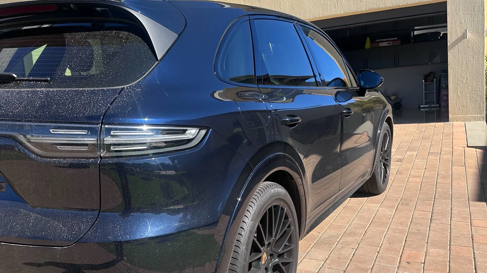

Trim Coat
From R800 · 2+ yrs
Restores faded exterior plastics and stops them going grey again. UV resistant, prevents cracking, natural finish.
Nasiol 10H coating systems applied to properly corrected paint, at your home or office. Hydrophobic, UV resistant, and built for Highveld sun.

Ceramic coating chemically bonds to your clear coat and forms a hard, hydrophobic layer. Water sheets off, contaminants struggle to bond, UV damage slows down, and washing gets dramatically easier.
What it does not do is fix your paint. Coat over swirled paint and you've sealed the swirls in for three to five years. That's why we won't apply a coating without correcting first — it's not an upsell, it's the only order that makes sense.
It also isn't a force field. It won't stop stone chips or a trolley in a car park. It makes maintenance easier and keeps the finish looking corrected for years, which is a genuinely good deal — just not a magic one.
Pricing is "from" — final quote depends on vehicle size and paint condition, confirmed at inspection.

Our longest-lasting paint coating. For cars you intend to keep, garage-kept vehicles, and anyone who wants maximum gloss depth.

The sensible choice for a daily driver. Same 10H hardness, shorter service life, meaningfully lower cost.
Restores faded exterior plastics and stops them going grey again. UV resistant, prevents cracking, natural finish.
Windscreen and windows. Rain sheets off at speed, wipers work less, night visibility in Joburg storms improves noticeably.
Seats and leather surfaces. Spill and stain resistance, UV protection against Highveld sun, without changing the feel.
Because the coating is transparent and permanent. Every swirl, hologram and bit of oxidation under it gets locked in for the life of the coating. Correcting first is the whole point — otherwise you've preserved the damage.
The car can be driven once we leave, but it must stay dry for 24 hours while the coating cures. No rain, no washing. We'll plan the booking around the weather.
No. 10H refers to a pencil hardness test, not the same scale used for minerals. A coating resists light marring far better than bare clear coat, but a careless wash or a trolley will still leave a mark.
You should wash it more carefully, not less. Coating-safe pH-neutral shampoo, two-bucket method, no automatic car washes. We give you a maintenance schedule and can do the washes ourselves.
It degrades gradually rather than falling off. Beading gets weaker and the surface stops feeling slick. We track your coating's expiry and get in touch before it lapses so the paint underneath is never left unprotected.
Depends on how long you're keeping the car and where it's parked. A garage-kept car you'll own for years justifies NL272. A daily driver you'll sell in two years doesn't. We'd rather sell you the right one than the expensive one.
Fully mobile across Johannesburg. If your suburb isn't listed, message us — we cover most of the greater Joburg area.
Tell us about the car and what's bothering you about the paint. We'll confirm the package and a fixed price before any work starts.